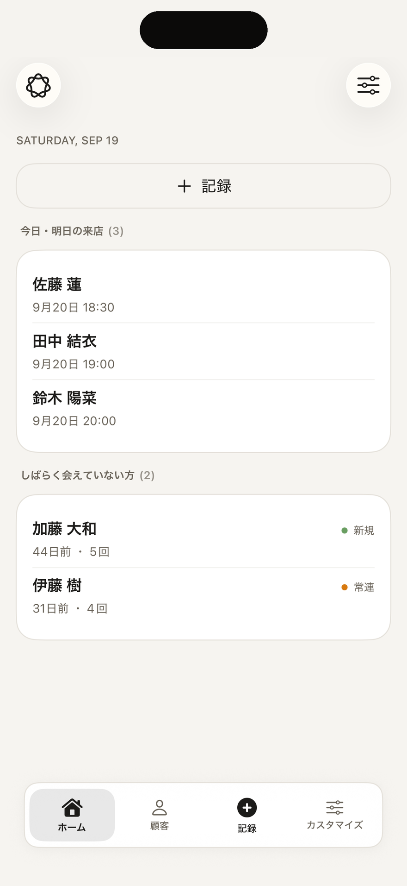
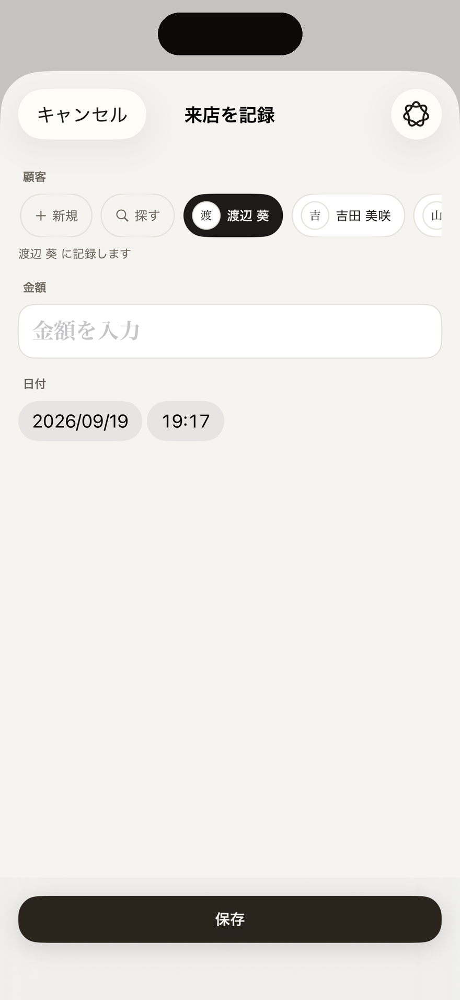
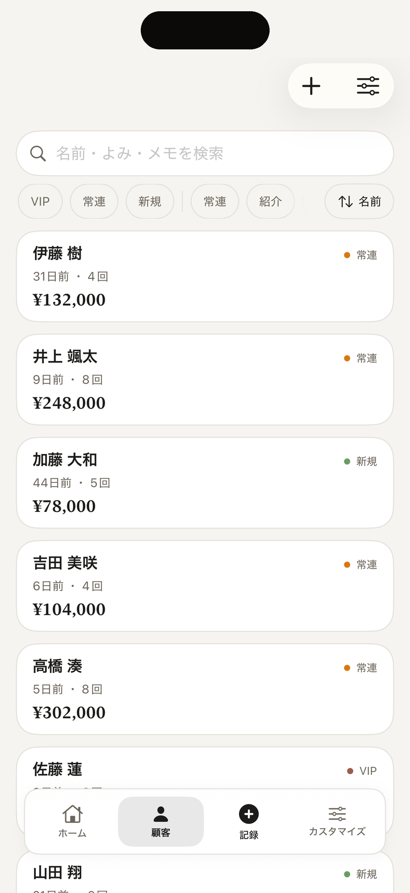
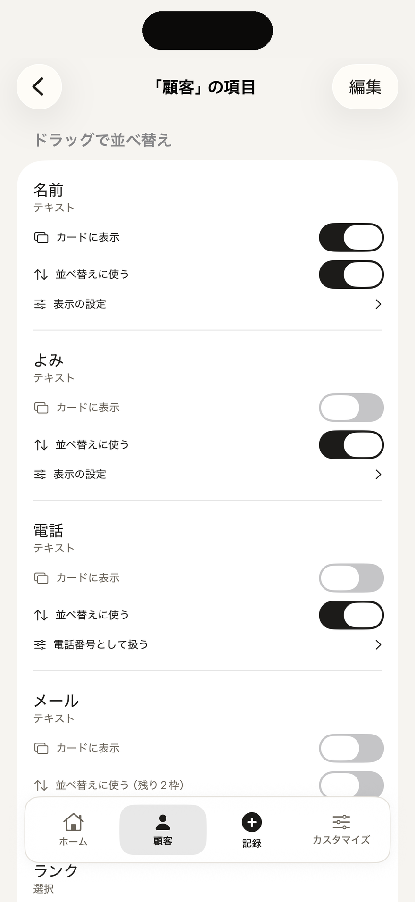
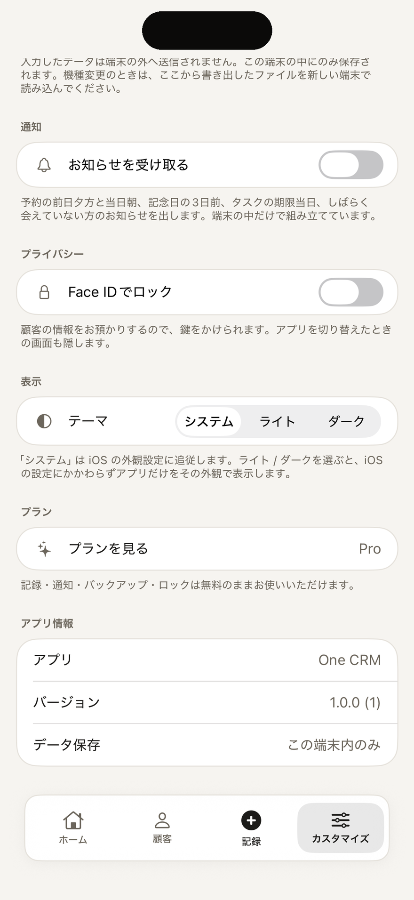

One CRM の使い方
One CRM は、顧客の名前と会ったことを記録すると、最後に連絡した日・回数・売上が自動で計算される顧客台帳です。項目も呼び名も自分の商売に合わせて作り替えられる分、最初はどこから触ればよいか迷うかもしれません。このページでは、始め方から順に説明します。
- はじめる前に
- 出発点を選んで始める
- 画面の見方
- 顧客を登録する
- 会ったことを記録する
- ホームを使う
- 一覧で探す・整理する
- 項目を作り替える
- 自動計算の項目を作る
- コレクションとビジネス
- 法人営業で使う
- 通知を受け取る
- Apple Intelligence で話しかける
- チームで使う（Pro）
- 同期・ロック・バックアップ・CSV
- 無料でできることと Pro
- iPad・Mac で使うとき
- うまくいかないとき
1. はじめる前に
- iPhone・iPad（iOS 26 以上）か Mac（macOS 26 以上）で使えます。
- アカウント登録は不要です。入れたデータは、この端末と、iCloud 同期がオン（初期設定）のときはご自身の iCloud に保存されます。開発元の Pohoda には送信されません。
- 顧客は全ビジネス合計で10人まで無料です。記録・通知・バックアップ・CSV・アプリロックは、無料のまま使えます。
2. 出発点を選んで始める
- はじめて開くと「どんなお仕事ですか？」と出ます。自分の商売に近い出発点を選び、「はじめる」を押します。
- 「最初の顧客を登録しましょう」（出発点によっては「取引先」）と出たら、名前を入れて「はじめる」を押します。「連絡先から取り込む」で、iPhone の連絡先からまとめて入れることもできます。あとで登録するなら「あとで登録する」を押します。
| ゼロから作る | 顧客・取引・タスク・ノートだけの最小構成です。来店などの記録の種類と自動計算は、自分で作ります。 |
|---|---|
| 個人事業主・フリーランス | 取引先・案件・やりとり。案件は「問い合わせ」から「入金済」までの進み具合で管理し、最終連絡と累計の売上を自動で計算します。 |
| 接客・ナイト | 顧客と来店。指名・同伴・誕生日を記録し、最終来店・来店回数・今月売上・累計を自動で計算します。 |
| 物販・ハンドメイド | 顧客・注文・在庫。販売経路（minne・Creema など）やお届け先を残し、最終注文と累計を自動で計算します。 |
| 法人営業 | 取引先・担当者・案件・活動履歴。案件をパイプラインで管理し、最終接触と活動回数を自動で計算します。 |
どの出発点も初期値です。項目も呼び名も、あとから自由に変えられます。商売が複数あるときは、あとで別の「ビジネス」として足せます（10）。
3. 画面の見方
iPhone では、画面の下に次のタブが並びます。
- ホーム：しばらく会えていない人や、近い予定・期限のタスクなど、いま気にかけるものが並びます。
- 顧客・来店・案件などのタブ：記録している種類（コレクション）ごとの一覧です。5つ以上あると、4つ目からは「その他」にまとまります。
- 記録：会ったことをすぐに残すボタンです。
- カスタマイズ：ビジネスの切り替え、コレクションやタブ、同期・通知・ロック・バックアップ、プランなどの設定です。
「分析」のタブは、最初は隠れています。使うときは、「カスタマイズ」の「タブ」で、「分析」の目のアイコンを押して表示します。タブの並べ替えも同じ場所でできます。

4. 顧客を登録する
- 「顧客」のタブで、右上の「＋」を押します。
- 名前を入れます。先頭の丸い部分を押すと写真も登録できます。
- ほかに入れたい項目は「項目を追加」から足します。足した項目は、次からは最初から並んで開きます。
- 「保存」を押します。
iPhone の連絡先からまとめて入れるときは、一覧の並べ替えボタンのメニューにある「連絡先から取り込む」を使います。名前・よみ・電話・メール・顔写真が入り、同じ名前の人は取り込みません。
顧客の詳細でできること
- 項目をタップすると、その場で書き換えられます。
- 電話番号やメールの項目からは、そのまま電話・SMS・メールを開けます。電話やメールのあとには「連絡したことを記録しますか？」と聞かれ、「記録する」を押すと今日の日付で1件残ります。
- 右上のメニューから「保管する」「複製」「削除」ができます。もう来ない人は、削除せずに「保管する」と一覧から隠せます。
5. 会ったことを記録する
- タブの真ん中の「記録」を押します。
- 顧客を選びます。最近やりとりした顧客が並ぶので、タップするだけです。並んでいない人は「探す」、はじめての人は「新規」から選びます。
- 金額があれば入れます。過去に使った金額がボタンで出るので、同じ金額ならタップするだけです。
- 日付と時刻は、いまの時刻が入っています。必要なら変えて「保存」を押します。

保存すると、その顧客の最後に会った日・回数・今月の売上・累計が自動で更新されます（項目の名前は出発点によって「最終来店」「来店回数」などになります）。記録の削除や付け替えをしたときも計算し直します。
記録の画面で入れるのは、顧客・金額・日付だけです。粗利・同伴・メモなどは、保存したあとに記録を開いて足します。顧客の詳細にある「＋ 来店」のようなボタンから、その顧客を選んだ状態で記録することもできます。
予定（予約）を入れる
日付を先の日にすると、「予定」として保存されます。「毎週」「隔週」「毎月」の繰り返しも選べます。同じ時間帯にほかの予定があると知らせます。予定は、その日が来るまで最後に会った日や回数には数えません。
6. ホームを使う
ホームには、出発点に合わせたものが最初から置いてあります。中身があるものだけが表示されるので、記録が少ないうちは空に見えることがあります。いちばん下には、最近の記録が5件並びます。
- しばらく連絡していない・会えていない人：最後に会った日から30日以上たった人が出ます。長押しで、14日・21日・30日・60日から選べます。
- 今日・明日の予定：今日と明日の予定が並びます。
- 近い次回アクション・期限のタスク：期限が近いもの、過ぎたものが並びます。
- 動きが無い案件：しばらく更新していない案件が並びます。受注・失注など、終わった案件は出ません。
- 在庫わずか（物販）：残りが少ない在庫が並びます。
右上の「ホームを編集」で、置くものを足したり、ドラッグで並べ替えたり、左にスワイプして外したりできます。足せる候補は、自分の項目名から自動で作られます。無料では、最初から置いてあるものに加えて2つまで足せます。
7. 一覧で探す・整理する
- 上の検索欄で、名前・よみ・メモから探せます。
- 状況やタグのボタンで絞り込めます。件数も出ます。
- 並べ替えボタンのメニューで、並び順を変えたり、「保管したものを見る」「まとめて操作」を選んだりできます。まとめて操作では、選んだ人にまとめてタグを付けたり保管したりできます。
- 行を長押しすると、「保管する」「複製」「削除」が出ます。

8. 項目を作り替える
項目の編集は、各一覧の右上にあるスライダーのアイコンから開きます。「呼び名とアイコン」「項目」「カードの見せ方」の3つがあります。
- 「項目」を開き、「項目を追加」を押します。
- 「名前」（例：好きなお酒）を入れ、種類を選んで追加します。
- 各項目の「カードに表示」をオンにすると一覧のカードに出て、「並べ替えに使う」をオンにすると並べ替えや絞り込みに使えます。ドラッグで並べ替えもできます。
| テキスト | 名前や短い文章。電話番号・メール・リンク・住所として扱うと、そこから電話やメールを開けます。 |
|---|---|
| メモ | 長い文章 |
| 数値 | 件数や回数。単位と小数の桁を決められます。 |
| 金額 | 金額。税率と税込・税抜の入力を決められます。 |
| 日付 | 経過日数や記念日に使えます。 |
| 選択 | 決まった選択肢から1つ。色を付けられます。 |
| タグ | 決まった選択肢からいくつでも |
| 評価 | ★5段階 |
| 画像 | 写真を1枚 |
| ON/OFF | はい・いいえ |
| 関連 | ほかの記録とつなぎます（例：案件と取引先）。 |
選択やタグの選択肢は、項目の「選択肢を編集」で名前・色・並び順を変えたり、追加・削除したりできます。入力中に選択肢を選ぶ画面からも開けます。使わない項目は、左にスワイプして「非表示」にできます。非表示にしても、入力済みの内容は消えません。
「カードの見せ方」では、一覧のカードのタイトル・バッジ・補足・数値の枠に、どの項目を出すかを決めます。コレクションの呼び名とアイコンは「呼び名とアイコン」で変えられます。呼び名を変えても、入力済みの内容も自動計算も変わりません。

9. 自動計算の項目を作る
「最終来店」や「今月売上」のような自動計算の項目は、顧客や案件の「項目」画面にある「自動計算の項目を追加」で作れます。
- 「呼び名」を入れます（例：最終来店・来店回数・今月売上）。
- 「何から数えるか」で、来店や注文などの記録の種類を選びます。
- 「数え方」を選びます。「最後の日付」はいちばん新しい記録の日付、「件数」は記録の数、「合計」は金額などの足し算です。合計のときは「何を足すか」も選びます。
- 件数と合計は、「期間」を「全期間」か「今月」から選びます。今月は、月が替わると0から数え直します。
作るとすぐに計算されます。数えるもとの記録に、その顧客につなぐ「関連」の項目があることが必要です。
10. コレクションとビジネス
コレクション（記録する種類）
顧客・来店・注文・在庫のように、記録したいものの種類を「コレクション」と呼びます。「カスタマイズ」の「コレクション」で「コレクションを追加」を押し、呼び名・アイコン・種類を選んで作ります。作ったコレクションは、自動でタブに並びます。
| 相手 | 顧客・取引先など。最後に連絡した日や合計を自動で計算できます。 |
|---|---|
| 出来事 | 来店・注文・セッションなど。相手につなげて記録します。 |
| 取引 | 案件・契約など。進み具合を段階で管理します。 |
| やること | 期限のあるもの |
| ノート | 文章を残すだけのもの |
| その他 | 在庫・商品・場所など |
種類は作るときにだけ選べます。無料では、出発点で用意されたものに加えて、ビジネスごとに1つまで作れます。
ビジネス（商売ごとの台帳）
商売が複数あるときは、「ビジネス」を分けて使えます。ビジネスごとに顧客も項目もホームも分かれます。「カスタマイズ」の「ビジネス」で「ビジネスを追加」を押し、名前と出発点を選びます。ビジネスが2つ以上になると、ホームの右上にビジネスの切り替えボタンが出ます。
11. 法人営業で使う
「法人営業」の出発点では、取引先・担当者・案件・活動履歴をつなげて管理します。
- 「取引先」のタブで会社を登録します。
- 「担当者」のタブの「＋」で担当者を登録し、「取引先」で会社を選びます。1社に何人でもつなげられます。
- 「案件」のタブで案件を登録し、取引先と担当者を選びます。
- 商談や訪問をしたら、「記録」から活動履歴を残します。最終接触と活動回数が自動で更新されます。
案件の一覧は、ステータス（案件化・見積提示・確度50%・コミット・受注・失注）ごとにまとまり、段階ごとの件数と金額の小計が出ます。上のボタンで段階ごとに絞り込めます。段階を進めるときは、案件を開いて「ステータス」を選び直します。
段階の名前や数は、「ステータス」の「選択肢を編集」で自分のやり方に合わせて作り替えられます。「終了した案件として扱う」をオンにした段階の案件は、ホームの「動きが無い案件」や通知から外れます。
12. 通知を受け取る
「カスタマイズ」の「通知」で「お知らせを受け取る」をオンにします。先の日付の予定やタスクを初めて保存したときにも、通知を許可するか聞かれます。ビジネスごとに、通知のオン・オフも選べます。
- 予定：前日の18時と当日の8時
- 記念日（誕生日など）：3日前の9時
- タスクの期限、案件の次回アクションの期限：当日の9時
- しばらく会えていない方：最後に会った日から30日以上たった人がいる日の9時
通知は端末の中だけで組み立てています。届かないときは、iPhone の設定アプリで One CRM の通知が許可されているかを確かめてください。
13. Apple Intelligence で話しかける
Apple Intelligence に対応した端末で、設定の Apple Intelligence がオンのときに使えます。ホームの左上か、記録の画面の右上にある Apple Intelligence のボタンを押し、話しかけるように入力します。処理はすべて端末の中で行われます。
- 探す：「先月来た製造業の顧客」「100万円以上の案件」のように書くと、当てはまる記録の一覧が出ます。
- 記録の下書き：「田中さんと商談、来月見積」のように書くと、項目が埋まった登録画面が開きます。内容を確かめて「保存」を押すと保存されます。
- 数字を聞く：「今週やることをまとめて」のように聞くと、今月や先月の件数・金額、期限の近いタスク、案件の段階ごとの件数などから答えます。
使えない端末でも、手で入れればすべての機能を使えます。
14. チームで使う（Pro）
ビジネスをほかの人と共有して、同じ顧客台帳を一緒に使えます。日本の App Store で Pro を登録していて、iCloud 同期がオンのときに使えます。共有に参加する人も、それぞれ Pro の登録が必要です。
- 共有したいビジネスを選んだ状態で、「カスタマイズ」の「ビジネス」にある「チームで使う」を開きます。
- 「メンバーを招待する」を押し、招待を送ります。招待した人だけが参加でき、読み書きができます。
- 招待された人は、届いたリンクを開くと参加できます。参加すると、そのビジネスに自動で切り替わります。
オーナーは「チームで使う」の画面で、参加者を「外す」ことや「共有をやめる」ことができます。参加した人は、「カスタマイズ」の「チーム」にある「チームから抜ける」で抜けられます。抜けると、その端末からビジネスが消えます。オーナーのデータは残ります。
15. 同期・ロック・バックアップ・CSV
iCloud 同期
「カスタマイズ」の「iCloud 同期」にある「iCloud で同期する」は、最初からオンです。同じ Apple アカウントの iPhone・iPad・Mac で同じ内容になります。オフにすると、この端末のデータはそのまま残り、ほかの端末とは同じ内容でなくなります。タブの並びと表示は端末ごとの設定で、同期しません。
アプリロック
「カスタマイズ」の「プライバシー」で、「Face ID でロック」（端末によって Touch ID・パスコード）をオンにします。アプリを切り替えたときの画面も隠れます。端末にパスコードが設定されていないと、オンにできません。

バックアップ
「カスタマイズ」の「データ」にある「バックアップ・CSV」を開きます。「バックアップを書き出す」で、写真も含めたデータを1つのファイルに保存できます。機種変更や、念のための控えに使えます。書き出しはずっと無料です。
「バックアップから復元」では、「いまのデータに足す」か「いまのデータを置き換える」を選べます。復元の前に、いまのデータは自動で控えられます。
CSV
同じ画面の「CSV」で、コレクションごとに「書き出す」「取り込む」ができます。1行目が項目名になり、Excel で開けます。
- 取り込めるのは UTF-8 の CSV です。1行目の項目名と同じ名前の項目に、自動で割り当てます。
- 取り込むときは、「取り込む（同じ名前は飛ばす）」「同じ名前は上書きする」「対応する列だけ・そのまま足す」から選べます。対応する項目がない列は、前の2つを選ぶと新しい項目として作られます。
- 関連（来店の顧客など）は取り込まれません。来店や注文を CSV で取り込んでも顧客にはつながらないため、自動計算には入りません。
16. 無料でできることと Pro
| 顧客の登録 | 無料：全ビジネス合計で10人まで（保管した人は数えません）／Pro：無制限 |
|---|---|
| コレクションの追加 | 無料：ビジネスごとに1つ／Pro：無制限 |
| 項目の追加 | 無料：コレクションごとに3つ／Pro：無制限 |
| 自動計算の追加 | 無料：コレクションごとに1つ／Pro：無制限 |
| ホームへの追加 | 無料：2つ／Pro：無制限 |
| 顧客ごとの分析 | Pro のみ（全体の分析は無料） |
| チームで使う | Pro のみ（日本の App Store） |
| 記録・通知・バックアップ・CSV・ロック・Apple Intelligence・iCloud 同期 | 無料 |
出発点で用意された項目やコレクションは、無料の数に入りません。Pro は「カスタマイズ」の「プラン」から、月額1,000円・年額10,000円・買い切り14,800円で登録できます。機種を変えたときは、同じ画面の「購入を復元」を押してください。
17. iPad・Mac で使うとき
iPad（通常の幅）と Mac では、左から「サイドバー・一覧・詳細」の3列で表示されます。一覧の行を選ぶと右の列に詳細が出て、離れるときに自動で保存されます。
| ⌘N | 記録 |
|---|---|
| ⌘F | 一覧の検索 |
| ↑ ↓ | 一覧で前後の記録へ移る |
| ⌘⌫ | 開いている記録を削除（確認が出ます） |
| ⌘1〜⌘9 | タブの切り替え |
Mac では、画面のスリープや、アプリを隠したときにもロックがかかります（ロックがオンのとき）。
18. うまくいかないとき
「分析」のタブが見当たりません
「分析」のタブは、最初は隠れています。「カスタマイズ」の「タブ」で、「分析」の目のアイコンを押すと表示されます。
11人目からの顧客が開けません
無料で使えるのは、全ビジネス合計で10人までです。登録の古い順に10人が開けて、それより後の顧客は鍵の印が付きます。顧客を「保管する」か削除すると枠が空きます。Pro にすると上限がなくなります。
最後に会った日や回数が変わりません
自動計算は、顧客につながった来店や注文などの記録から数えます。先の日付の記録（予定）は、その日が来るまで数えません。CSV で取り込んだ来店や注文は顧客につながらないため、自動計算に入りません。「ゼロから作る」で始めた場合は、出来事のコレクションと自動計算の項目を自分で作る必要があります。
ホームに何も出ません
ホームに置いたものは、当てはまる記録があるときだけ表示されます。たとえば「しばらく会えていない方」は、最後に会った日から30日以上たった人がいるときに出ます。記録が増えると並ぶようになります。
ほかの端末に同じ内容が出ません
「カスタマイズ」の「iCloud 同期」がオンになっているか、両方の端末で同じ Apple アカウントの iCloud にサインインしているかを確かめてください。「iCloud のアカウントが変わったか…同期を止めています」と出ているときは、「いまの iCloud で同期を再開する」を押します。
通知が届きません
「カスタマイズ」の「通知」で「お知らせを受け取る」と「このビジネスのお知らせ」がオンになっているか、iPhone の設定アプリで One CRM の通知が許可されているかを確かめてください。
「データを開けませんでした」と出ます
記録が消えたわけではありません。「もう一度開く」を押すか、アプリを開き直してください。念のため、「控えを書き出す」でデータを保存しておくと安心です。
解決しないときは、サポート か pohoda.inc@gmail.com までお知らせください。
料金やプライバシーについては One CRM の紹介ページ をご覧ください。